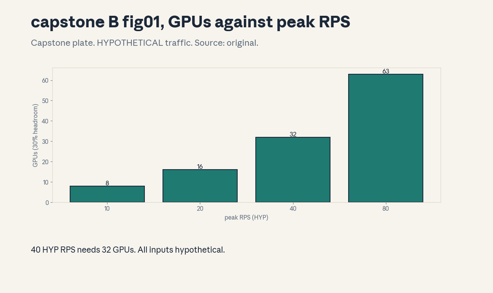
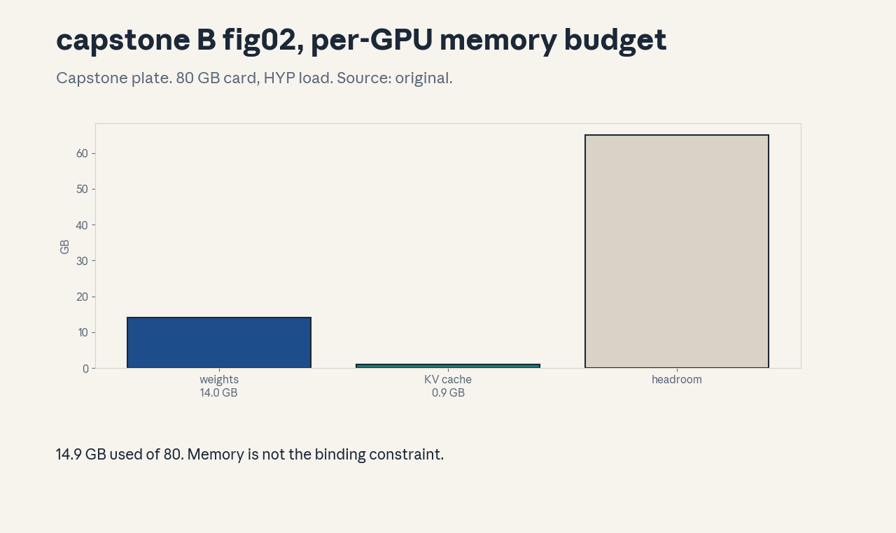

Capstone · Applied
Capstone B , applied/FDE serving deployment plan
Discovery
Fictional product: support chat for a SaaS company. Users ask account and billing questions, answers come from a 7B-class model with retrieval. All traffic, price, and SLO numbers below are HYPOTHETICAL, labeled HYP. Nothing here is measured.
Workflow baseline
Today: human agents handle 40 peak requests/second (HYP). Target: the model drafts answers, humans approve. The serving system must meet the SLOs before any automation expands.
Objectives
Serve 40 HYP peak RPS at p99 TTFT < 2000 ms and p99 TPOT < 50 ms (HYP SLOs), with a pre-written rollback plan.
Constraints
- Model: 7B bf16, 14.0 GB weights (course toy constant).
- GPUs: 80 GB cards (HYP hardware).
- Budget: HYP $2.50/GPU-hour.
- Trust boundary: the model never issues refunds, it drafts text only. Tool calls are disabled in v1.
Sizing (computed, HYP inputs)
Run python3 capstone_applied_run.py:
- Decode 2.4 s/req at 300 HYP output tokens. 1.7 rps/GPU.
- 32 GPUs at 30% headroom (HYP policy).
- Per-GPU: 14.0 GB weights + 0.9 GB KV = 14.9 GB of 80 GB.
- Monthly: $57,600 (HYP).
Alternatives considered
- int8 quantization: halves weight traffic, needs per-slice evals (U12) before use.
- Smaller model: cheaper, quality risk on hard queries.
- Overprovision: simple, costly. Chosen: full-precision 7B at 32 GPUs for v1, quantize after evals.
Acceptance gates
- p99 TTFT < 2000 ms, p99 TPOT < 50 ms (HYP), measured on the canary.
- Human approval rate and answer accuracy on a held-out support set (U12 rules).
- Cost per resolved ticket below the human-agent baseline (HYP).
Rollout
Canary 1% traffic for 24h, then 10%, 50%, 100% on green gates. Rollback triggers: error rate +0.5pt or p99 latency +20% (HYP).
Monitoring
Dashboards: RPS, TTFT/TPOT p50/p99, GPU util, KV memory, approval rate, rollback triggers. Alerts page the on-call (ownership below).
Rollback
One-command revert to the previous artifact, the old weights stay warm for 7 days (HYP policy). Drill quarterly.
Ownership and handoff
Owner: the serving team. Handoff package: this plan, the sizing script, the runbook, the eval report. Stakeholder defense: the cost/latency/quality triangle (U11-C12) with the HYP numbers on the table and the rollback plan pre-approved.
Figures

(GPUs vs RPS),
(memory budget). Render:python3 render_capstone_applied.py. PIL-verified,
metadata-stripped. Every number on the plates is HYPOTHETICAL.